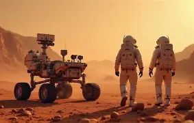

Could Mars have supported human exploration?

Mars has been a subject of intense interest for human exploration due to its potential habitability. NASA's Mars exploration missions aim to determine if Mars was once a habitable world, with ongoing studies focusing on the planet's water content and the presence of ancient microbial life.